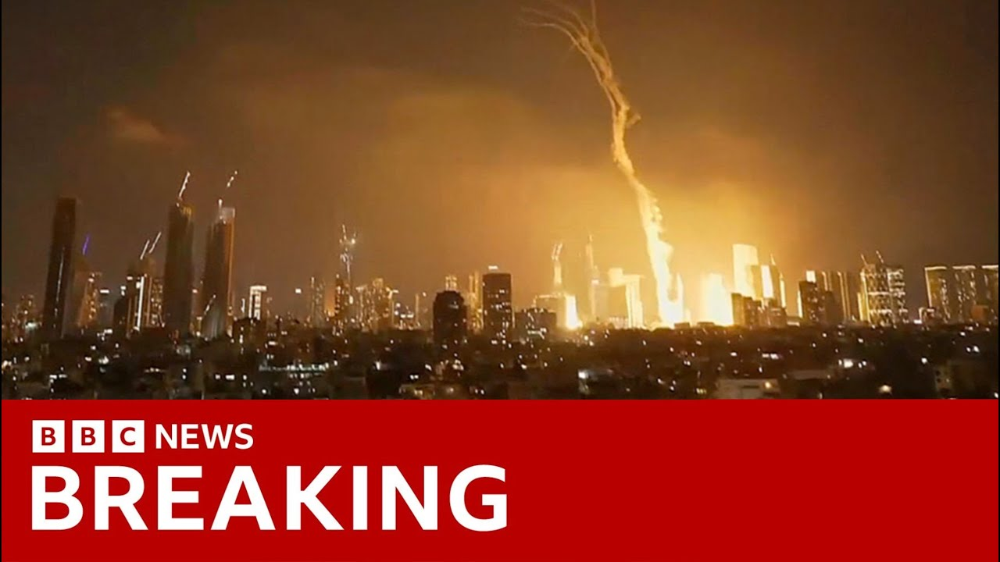

【中东危机升级：在核设施遭袭后，伊朗对以色列发动导弹袭击】
Summary: Iran launched retaliatory strikes on Israel, targeting military centers and air bases, with explosions reported in Tel Aviv and Jerusalem. The attack followed Israeli strikes on Iranian nuclear sites, escalating tensions amid threats of further retaliation and international calls for restraint.
摘要： 伊朗对以色列发动报复性打击，目标包括军事中心和空军基地，特拉维夫和耶路撒冷发生爆炸。此次袭击是以色列袭击伊朗核设施后的回应，紧张局势升级，双方威胁进一步报复，国际社会呼吁克制。

⏱️ Estimated Reading Time: 21 min
📚 六级生词 📚 雅思生词 📚 托福生词 📚 专八生词 📚 SAT生词 📚 考研生词 📚 GRE生词 📚 高考生词
Iran has tonight launched retaliatory strikes on Israel.
伊朗今晚对以色列发动了报复性打击。
Iran's Revolutionary Guard says it attacked dozens of targets, including military centers and air bases.
伊朗革命卫队称袭击了数十个目标，包括军事中心和空军基地。
Smoke has been seen rising over the skyscrapers of Tel Aviv after an aerial attack on the Israeli city.
以色列城市特拉维夫遭空袭后，摩天大楼上空升起浓烟。
Explosions have also been heard in Jerusalem.
耶路撒冷也传出爆炸声。
Tonight's bombardment is in retaliation for Israel strikes on Iran last night, which targeted military and nuclear sites.
今晚的轰炸是对以色列昨晚袭击伊朗军事和核设施的报复。
Israel said the attacks were vital to prevent Iran from developing a nuclear weapon.
以色列称袭击对阻止伊朗研发核武器至关重要。
The country's spiritual leader, Ayat Hami, promised his country would inflict heavy blows in response.
该国精神领袖阿亚图拉·哈米承诺将予以重击回应。
Well, this was the scene in Tel Aviv in Israel just an hour or two ago.
这是以色列特拉维夫一两小时前的场景。
There have been huge explosions in the sky over central Israel, although it is unclear what's from missile strikes and what is Israel intercepting them with its Iron Dome.
以色列中部上空发生巨大爆炸，尚不清楚是导弹袭击还是以色列“铁穹”系统的拦截。
Tonight, Israel says it struck a nuclear facility in Isvahan.
以色列称今晚袭击了伊斯法罕的核设施。
And that is in addition to last night's strikes on the country's biggest nuclear facility at Natans and also at Kamancha.
这是对昨晚袭击纳坦兹和卡曼恰最大核设施的补充。
Well, our first report tonight is from Lucy Williamson who's in Tel Aviv.
今晚的首篇报道来自驻特拉维夫的露西·威廉姆森。
In bunkers and stairwells, they listened to Tel Aviv under fire from Iran.
在掩体和楼梯间，人们听着伊朗对特拉维夫的炮火。
Defenses scrambling above a city of civilians and military bases from ballistic missiles arriving minutes after launch.
防御系统在平民和军事基地上空紧急应对发射后几分钟内抵达的弹道导弹。
Impacts felt inside shaking buildings.
震动的建筑内能感受到冲击。
For the third time tonight, missiles are being fired at Israel.
今晚第三次有导弹射向以色列。
Fired at Tel Aviv.
射向特拉维夫。
This is the response Israel was expecting.
这是以色列预料中的回应。
And all across the country, people are listening to the sound of Israel and Iran at war.
全国上下，人们听着以伊交战的声音。
Missile defense systems were also activated over Jerusalem.
耶路撒冷上空也启动了导弹防御系统。
Israeli media reported several impacts across the country, including near military sites.
以色列媒体报道全国多处遭袭，包括军事基地附近。
A direct hit to this building reportedly left people trapped inside.
据报道，该建筑被直接击中，有人被困。
Israel began striking Iran overnight.
以色列连夜开始袭击伊朗。
The nuclear enrichment site at Natans, one of the first to be hit.
纳坦兹铀浓缩设施是首批目标之一。
A target for Israel's prime minister for decades, hit in what he said was a last chance to stop Iran making a nuclear bomb.
这是以色列总理数十年的目标，他称这是阻止伊朗造核弹的最后机会。
Air defenses, missile sites, nuclear scientists, and military leaders, including the head of Iran's armed forces wiped out in a series of nationwide strikes.
防空系统、导弹基地、核科学家和军事领导人（包括伊朗武装部队负责人）在全国性袭击中被消灭。
An attack involving 200 fighter planes working with covert intelligence teams at a secret base inside Iran.
此次袭击动用200架战机与伊朗境内秘密基地的情报小组合作。
These pictures from Israel's spy agency are said to show commandos firing at a missile launcher during this morning's attack.
以间谍机构发布的画面显示今晨袭击中突击队员向导弹发射器开火。
Their prime minister said the clock on Iran's nuclear ambitions had run out.
以总理称伊朗核野心的时间已耗尽。
Moments ago, Israel launched Operation Rising Lion, a targeted military operation to roll back the Iranian threat to Israel's very survival.
以方刚启动“雄狮崛起”行动，旨在消除伊朗对以生存的威胁。
This operation will continue for as many days as it takes to remove this threat.
行动将持续至威胁消除。
For decades, the tyrants of Tehran have brazenly, openly called for Israel's destruction.
德黑兰统治者数十年来公然呼吁摧毁以色列。
In Iran, hundreds of protesters called for revenge.
伊朗数百名抗议者要求报复。
Iran's supreme leader said Israel had made an enormous miscalculation and that the consequences would bring it to ruin.
伊朗最高领袖称以色列严重误判，后果将致其毁灭。
They should not imagine that they struck and it's over.
他们别以为打了就结束了。
No, they started this.
不，是他们挑起的。
They launched a war.
他们发动了战争。
We will not allow them to escape unscathed from the major crime they have committed.
我们不会让他们犯下大罪后全身而退。
Iran has also now reported unconfirmed signs of radiation at the Natans nuclear site.
伊朗报告纳坦兹核设施出现未证实的辐射迹象。
I call on all parties to exercise maximum restraint to avoid further escalation.
我呼吁各方保持最大克制以防局势升级。
I reiterate that any military action that geopodizes the safety and security of nuclear facilities risks grave consequences for the people of Iran, the region, and beyond.
我重申，危及核设施安全的军事行动可能给伊朗人民、地区及全球带来严重后果。
A former general in Israel's air force said there were limits to what military force could achieve.
以空军前将领称军事力量的作用有限。
I think uh we can say pretty much easily this was the most complicated and and uh actually complicated probably dangerous uh operation that Israel ever did in its history.
这可能是以历史上最复杂危险的行动。
We have a huge military success.
我们取得巨大军事成功。
A huge one.
巨大的成功。
Okay.
好吧。
What's the next step?
下一步是什么？
Are we going to transform it to something that will say, "Okay, the region is safe for the next 50 years, not having any nuclear threats from Iran."
能否将其转化为“未来50年该地区免受伊朗核威胁”的成果？
Tonight, Israel was still striking across the country.
今晚以色列仍在袭击伊朗全国。
This explosion filmed in West Thran.
这段视频拍摄于西德黑兰的爆炸。
Others reported at nuclear facilities in Esvahan and Foraux.
其他爆炸发生在伊斯法罕和福拉多的核设施。
Israel says Iran was secretly building a nuclear bomb.
以色列称伊朗秘密制造核弹。
Too big a risk, it said.
风险太大。
But Iran may now decide that negotiations won't protect it from attack and that a nuclear weapon will.
但伊朗或认为谈判无法保护自己，核武器才行。
Well, the alerts have been lifted for now in Tel Aviv, but Israel's attack isn't over.
特拉维夫警报暂解除，但以方攻击未结束。
There's a drone uh just flying above us here, and the threat, of course, hasn't gone as well.
无人机在头顶飞行，威胁仍在。
Israel's prime minister tonight had a message directly for the Iranian people, saying Israel's fight was not with them.
以总理今晚直接向伊朗人民喊话，称斗争对象非他们。
it was with their government.
而是其政府。
The time has come, he said, to stand up for your freedom from the evil and oppressive regime.
他说，是时候反抗邪恶压迫政权、争取自由了。
And that strengthened the view that some people here have that Benjamin Netanyahu's goal is not just to dismantle Iran's nuclear program, but its regime as a whole.
这强化了内塔尼亚胡目标不仅是摧毁伊朗核计划、更是其政权的观点。
Thanks so much, Lucy Williamson there in Tel Aviv.
感谢特拉维夫的露西·威廉姆森。
Let's assess the situation in Jerusalem as well.
再看耶路撒冷局势。
Our correspondent Ioni Wells is there.
记者伊奥尼·威尔斯在现场。
Uh what's the latest where you are?
你那边最新情况如何？
I saw a series of drones fly over Jerusalem followed by some big explosions and bangs.
我看到无人机飞过耶路撒冷，随后发生大爆炸。
Now, it's not clear if those were the sounds of strikes or interceptions by Israel's defense system.
尚不清楚是袭击还是以防御系统拦截的声音。
Israel has said that the majority of uh drones and missiles that were fired by Iran were either intercepted or fell short.
以方称大部分伊朗无人机和导弹被拦截或未命中。
Now, minutes before that, we had all received this emergency alert.
几分钟前我们收到紧急警报。
Sirens were going off here in the same way that they did at 3:00 a.m. this morning, urging people to go to shelter or remain very close to them.
警报声与今晨3点相同，敦促人们躲避。
This was after Iran confirmed that it was launching retaliatory military strikes on central Israel after a series of Israeli strikes on Iran today.
此前伊朗确认对以中部发动报复性军事打击。
Now, for now, that emergency alert has subsided.
目前警报已解除。
People are being urged to remain cautious, but as the last 24 hours have evidence, that could change again very quickly.
民众被呼吁保持警惕，但过去24小时表明局势可能突变。
Ioni, thank you.
谢谢伊奥尼。
Ioni Wells.
伊奥尼·威尔斯报道。
Well, this isn't the first conflict between Israel and Iran, but it is the most explosive.
这不是以伊首次冲突，但是最激烈的一次。
The risks are huge.
风险巨大。
Our security correspondent, Frank Gardner, is here.
安全记者弗兰克·加德纳在此。
Frank.
弗兰克。
Well, Jane, this conflict is bigger, more extensive, and potentially more dangerous than anything that's gone before.
简，此次冲突规模更大、范围更广、潜在危险性更高。
The targets hit range right across Iran.
目标遍及伊朗全境。
It's the biggest assault on that country since the Iran Iraq war in the 1980s.
这是自80年代两伊战争以来伊朗遭受的最大规模袭击。
One of the principal targets was Natans around 200 miles south of Tehran.
主要目标之一是德黑兰以南200英里的纳坦兹。
Tonight, the UN's nuclear watchdog says it's been destroyed.
联合国核监督机构称其已被摧毁。
It was Iran's chief uranium enrichment facility.
这是伊朗主要铀浓缩设施。
That's a process that can have both peaceful and military purposes.
该技术可民用也可军用。
Tonight, Israel said it also hit a nuclear site in Isvahan.
以方称还袭击了伊斯法罕核设施。
And in the western city of Kman, Shaha, new footage of Israeli air strikes.
西部城市克曼沙赫有新空袭画面。
Missile bases have been struck across the country.
全国导弹基地遇袭。
On top of this, key military figures have been assassinated.
此外，关键军事人物被暗杀。
Major General Hussein Salam, the head of the Revolutionary Guards Corps.
革命卫队负责人侯赛因·萨拉姆少将。
Major General Muhammad Beri, head of Iran's armed forces, and Brigadier General Amir Hajisad, the head of the Revolutionary Guards Air Force.
武装部队负责人穆罕默德·贝里少将和革命卫队空军司令阿米尔·哈吉萨德准将。
Also targeted, at least six nuclear scientists.
至少六名核科学家也成目标。
So, how is this being viewed by the Iranian public?
伊朗公众如何看待？
The mood in the country is really divided.
民众情绪分化。
Some people, they're supporters of the Iranian establishment, they are angry, they're furious, they want revenge.
部分支持现政权者愤怒要求报复。
However, there are some other Iranians, those who've been repressed in the over in the past four decades by the Iranian regime.
但另一些过去40年受压迫的伊朗人则对革命卫队高官被杀感到高兴。
They are quite happy that the top Iranian Revolutionary Guard commanders are killed.
以方对伊朗革命卫队高级指挥官遇袭身亡感到满意。
Now, back in 2015, Iran was enriching uranium to just 3.6% enough for civil nuclear power.
2015年时伊朗铀浓缩纯度仅为3.6%的民用级别。
Today, it's 60% closer to what's needed for a bomb.
如今已提升至接近武器级的60%。
But it was Donald Trump, close ally of Israel, who pulled the US out of a hard one deal to curb Iran's enrichment.
作为以色列盟友的特朗普退出遏制伊朗核计划的协议。
Today, he's ordered more US naval forces to the Middle East amid fears that Iran could hit US bases.
因担忧伊朗报复，他下令向中东增派海军。
And there's another risk that Israel's operation could even backfire.
以色列行动存在适得其反的风险。
The military strikes from Israel are likely to expedite the thinking inside Iran about the fact that a nuclear bomb is the only real insurance that the Iranian leadership has against a major uh Israeli US-led attack that targets the core of the leadership.
以方空袭可能促使伊朗确信核武是抵御美以斩首行动的唯一保障。
So look, in purely tactical terms, Israel, which don't forget is a nuclear power, has achieved military success.
从战术角度看，作为核国家的以色列取得了军事成功。
It struck deep into Iran and assassinated top commanders.
其深入伊朗境内实施了高层刺杀。
But this isn't the end.
但这并非终点。
If Iran's regime survives, it may well now race to build a bomb, setting off a nuclear arms race across the Middle East.
若现政权存续，伊朗可能加速拥核，引发中东核军备竞赛。
Jane, Frank, thank you, Frank Gardner.
简、弗兰克，感谢弗兰克·加德纳。
Well, Israel's attacks come as the US and Iran are trying to reach a deal on Thran's nuclear program.
以色列发动袭击时美伊正就核计划进行谈判。
Talks are meant to resume this weekend.
谈判定于本周末重启。
President Trump has urged Iran to make a deal, warning of even more brutal Israeli attacks if it doesn't.
特朗普警告伊朗若不妥协将面临更猛烈打击。
Tonight, the Prime Minister Sakir Stalmer spoke with President Trump.
今晚萨基尔总理与特朗普通电话。
The men say they agreed on the importance of diplomacy and dialogue to resolve this mounting conflict between Iran and Israel.
双方同意通过外交对话解决日益升级的伊以冲突。
Tom Baitman reports.
汤姆·贝特曼报道。
A superpower at sea to defend its ally.
超级大国出动海军保卫盟友。
Tonight, the US confirmed it helped Israel shoot down Iranian missiles.
美方证实协助以方拦截伊朗导弹。
This sharp escalation after President Trump had been ing on the side of diplomacy.
此前主张外交途径的特朗普导致局势急剧升级。
As Israel attacked overnight, Washington warned Iran not to hit back at American bases, saying it wasn't involved.
以方夜袭时，美方警告伊朗勿报复美基地并撇清干系。
But by this morning, Mr. Trump was on the offensive, saying Thran's hardliners had lost the fight to get their terms on the nuclear deal.
今晨特朗普转守为攻，称德黑兰强硬派在核谈判中落败。
They're all dead now, he said, and it will only get worse.
他表示"强硬派已消亡，局势将恶化"。
There has already been great death and destruction, but there is still time to make this slaughter, with the next already planned attacks being even more brutal, come to an end.
尽管伤亡惨重，但仍有希望阻止更残酷的后续袭击。
In accordance with rule, Turkey.
根据规则，土耳其。
Tonight, the UN Security Council has been meeting in emergency session to discuss the crisis.
联合国安理会今晚召开紧急会议。
Amid the calls for deescalation, the Americans warned about further consequences.
各方呼吁降温时，美方警告将采取进一步行动。
No government proxy or independent actor should target American citizens, American bases or other American infrastructure in the region.
任何势力不得袭击美国公民、基地及设施。
The consequences for Iran would be dire.
伊朗将面临严重后果。
We strongly and unequivocally condemn the barbaric and criminal attack.
我们强烈谴责野蛮的犯罪行径。
A series of targeted assassination were against senior military officials, nuclear scientists, and innocent civilians.
针对军官、核科学家和平民的系列暗杀。
The Israeli leader has long pushed Mr. Trump for a green light to strike Iran's nuclear facilities.
以方长期寻求美方批准打击伊朗核设施。
Timing was critical after Israel destroyed many Iranian air defenses last year and wiped out much of the deterrent effect of Hezbollah on its own border.
去年摧毁伊朗防空系统削弱真主党威慑后，时机至关重要。
Mr. Netanyahu argued now was the time to strike.
内塔尼亚胡主张此刻应实施打击。
But Mr. Trump, via his envoy, Steve Wickoff, turned instead to rounds of talks with the Iranians, meaning this close but often fractious relationship was under even more strain.
但特朗普通过特使转向谈判，使本已紧张的美以关系更趋恶化。
Mr. Trump told the Israelis publicly and privately he wanted more time for talks, leading to a tense 40minute phone call on Monday.
特朗普公开及私下要求延长谈判，导致周一时长40分钟的通话气氛紧张。
There's a chance of massive conflict.
可能爆发大规模冲突。
We have a lot of American people in this area.
该地区有众多美国公民。
and I said, "We got to tell him to get out."
我表示必须要求他们撤离。
Mr. Trump said he was losing confidence in the talks.
特朗普称对谈判失去信心。
But as late as yesterday, we're still equivocating over an Israeli strike.
但直至昨日仍在权衡是否批准以方行动。
We I'd much prefer an agreement.
我更倾向达成协议。
As long as I think there is an agreement, I don't want them going in because I think that would blow it.
只要存在协议可能，就不支持动武以免破坏谈判。
Might help it actually, but it also could blow it.
动武或有利谈判，但也可能适得其反。
It comes in a region on edge.
该地区已处于紧张状态。
Some American embassies and bases are already partly evacuated.
部分美使馆和基地已开始撤离。
At home, Mr. Trump has been preparing for his big military parade.
特朗普国内正筹备阅兵仪式。
His hope now is that his allies deadly pressure pushes Iran towards a nuclear deal on his terms.
他希望盟友的致命施压能迫使伊朗接受其核协议条款。
His opponents are already accusing him of enabling a reckless gamble, risking America getting dragged into a war with Iran.
反对者指责其冒险行为可能使美国卷入对伊战争。
Tom Baitman, BBC News, Washington.
BBC新闻汤姆·贝特曼华盛顿报道。
Well, in a moment, we'll get the thoughts of Lisa Deet, who is here with me.
稍后将连线丽莎·迪特。
First though, let's head to Washington and join Gary O' Donahue.
首先接入华盛顿的加里·奥多诺休。
And that's one of the the key questions where you are, Gary.
加里，关键问题是：
Can the US avoid being dragged into this?
美国能否避免卷入冲突？
[Music]
[音乐]
Well, the administration's position has clearly evolved over the last 20 hours.
过去20小时政府立场明显转变。
We started with the secretary's des state describing it as a unilateral action.
国务卿最初称此为单边行动。
Now, today, Donald Trump talking about it being an excellent piece of action involving great American hardware.
如今特朗普称赞此次动用美制武器的出色行动。
And indeed, we're now learning that Americans are involved in helping intercept these missiles coming in.
据悉美军参与拦截来袭导弹。
It comes with domestic risks for the president.
这对总统存在国内政治风险。
Yes, there's strong support for Israel, but there also is strong animosity to any further involvement in Middle East wars and the 40,000 US troops that are in the region.
尽管民众支持以色列，但反对中东增派4万美军。
Now, the Donald Trump, you know, he's always talked about promises made, promises kept, and politics is about the deliverables.
特朗普常强调"言出必行"，政治重在成果。
Now, if you look at Ukraine, if you look at the hostages in Gaza, if you look at getting Iran to do a deal, I think this president is finding the process of delivering harder than he thought it would be.
从乌克兰、加沙人质到伊朗协议，兑现承诺比预期困难。
Thanks, Gary.
感谢加里。
Gary Odonahu and uh Lisette is our chief international correspondent of course and and people watching Lee will want to know where where what will happen, where will this go now, but it is so unpredictable, so unpredictable and so perilous.
加里·奥多诺休与首席国际记者莉赛特，观众迫切想知道局势走向，但前景极难预测且危险。
Prime Minister Netanyao of Israel is making it clear he's waited a long time for this moment and he's not going to waste it.
以色列总理内塔尼亚胡表明已等待此刻多时，必将把握机会。
We have seen in the war across the region over nearly two years now that the guard rails are off.
近两年地区冲突表明安全护栏已失效。
So now Mr. Netanyahu is saying he wants to destroy Iran's weapons making capability.
内塔尼亚胡宣称要摧毁伊朗武器制造能力。
What does that mean?
这意味着什么？
How far will it go?
行动将有多深入？
All we know on day one is that it's going to take days with all of the dangers of escalation both deliberate and accidental.
首日可知行动将持续多日，存在故意或意外升级风险。
But there are Iranian hardliners who also have been waiting to have a go at Israel.
伊朗强硬派也一直等待打击以色列的机会。
They believe they were held back last year, told to exercise restraint, and now they literally are calling the shots.
他们认为去年被要求克制，如今真正掌握主动权。
So day one, Israeli and Iranian civilians are being hurt and killed.
冲突首日已有以伊平民伤亡。
There's growing uh fears about the danger of contamination and leakage.
民众日益担忧污染泄漏风险。
And finally, Prime Minister Netanyahu has also been making clear, as we heard in this program, he wants Iranians to use this moment to rise up.
最后，内塔尼亚胡明确希望伊朗民众趁机起义。
Many do want to see the back of the regime, but many don't.
虽有人希望推翻现政权，但反对者亦众。
And that too could be explosive.
这也可能引发爆炸性局面。
Lease as ever.
一如既往的莉赛特。